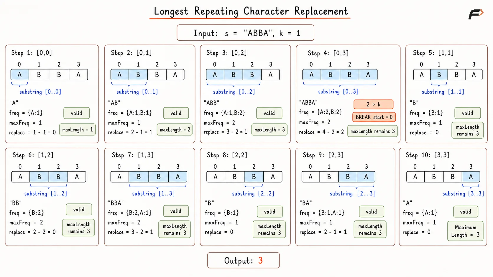
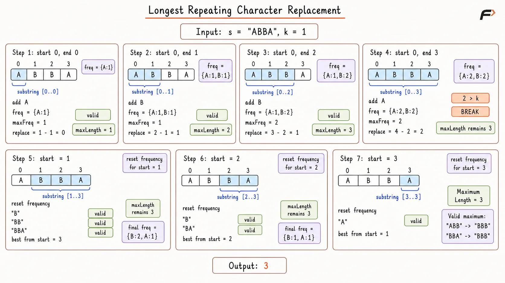
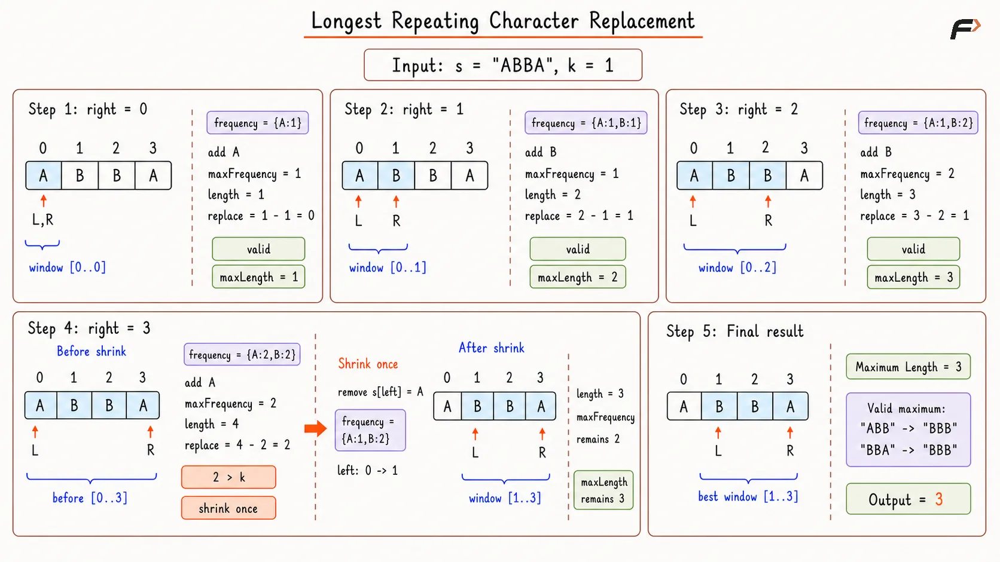

Longest Repeating Character Replacement
Given a string s and an integer k, return the length of the longest substring that can be changed into a substring containing the same character after replacing at most k characters.
You can replace any character in the substring with any other uppercase English character.
Example 1
Input: s = "ABAB", k = 2
Output: 4
Explanation: We can replace both 'A' characters with 'B', or both 'B' characters with 'A'. So the whole string can become one repeating character.
Example 2
Input: s = "AABABBA", k = 1
Output: 4
Explanation: The substring "AABA" can be changed to "AAAA" by replacing one 'B' with 'A'. So the answer is 4.
Brute Force Approach
In this approach, every possible substring is checked.
For any substring, we need to decide whether it can be converted into a string having only one repeating character using at most k replacements.
The best character to keep unchanged is always the character that appears the most in that substring. All other characters need to be replaced.
So, for a substring:
replacementsNeeded = length of substring - maximum frequency of any character in that substring
If replacementsNeeded is less than or equal to k, the substring is valid.
Algorithm
Store the string length in
nand return0whenn == 0ork < 0, because no valid result can be formed in these cases.Initialize
maxLength = 0to store the longest valid substring found so far.Select every
startindex and moveendfromstarttowardn - 1so every possible substring can be considered.For each range
s[start...end], build a frequency array of size26and find the highest character frequency in that substring.Calculate
replacementsNeeded = (end - start + 1) - maxFrequency. If this value exceedsk, break the currentendtraversal, because extending the same starting position cannot decrease the required number of replacements.Otherwise, update
maxLengthwithend - start + 1and return it after all starting positions are processed.
Dry Run

Longest Repeating Character Replacement Brute Force Dry Run.png
Solution
#include <bits/stdc++.h>
using namespace std;
class Solution {
private:
// Returns replacements needed
// for the selected substring.
int replacementsNeeded(
const string& s,
int start,
int end
) {
vector<int> frequency(26, 0);
int maxFrequency = 0;
// Count characters in the
// selected substring.
for (int i = start; i <= end; i++) {
int index = s[i] - 'A';
frequency[index]++;
maxFrequency = max(
maxFrequency,
frequency[index]
);
}
int length = end - start + 1;
return length - maxFrequency;
}
public:
// Finds the longest substring
// valid within k replacements.
int characterReplacement(string s, int k) {
int n = s.size();
// No valid substring can exist
// for these input conditions.
if (n == 0 || k < 0) {
return 0;
}
int maxLength = 0;
// Try every possible start.
for (int start = 0; start < n; start++) {
// Try every possible end
// for the current start.
for (int end = start; end < n; end++) {
int needed = replacementsNeeded(
s,
start,
end
);
// Further expansion cannot
// reduce replacements needed.
if (needed > k) {
break;
}
maxLength = max(
maxLength,
end - start + 1
);
}
}
return maxLength;
}
};
int main() {
string s = "AABABBA";
int k = 1;
Solution solution;
cout << solution.characterReplacement(s, k)
<< endl;
return 0;
}Complexity Analysis
Time Complexity: O(N³), where N is the length of the string. There are O(N²) possible substrings, and for every substring, counting character frequencies can take O(N) time.
Space Complexity: O(1), because the frequency array stores counts for only 26 uppercase English letters.
Better Approach
Instead of counting frequencies again for every substring, we can build the substring while moving toward the right.
For every starting index, the ending index is expanded one character at a time. While expanding, the frequency array is updated immediately.
At every step, we also maintain the maximum frequency in the current substring. This helps us quickly calculate how many characters need to be replaced.
If currentLength - maxFrequency is less than or equal to k, the substring is valid. If it becomes greater than k, we stop expanding for that starting index.
For the same starting index, adding more characters cannot reduce the number of replacements needed. It can either stay the same or increase. So, once the substring becomes invalid, there is no benefit in expanding it further.
Algorithm
The size of the string is stored in n. If n is 0, 0 is returned because an empty string has no substring. If k is negative, 0 is returned because negative replacements are not possible.
A variable maxLength is initialized with 0 to store the best valid substring length found so far.
The string is traversed using start as the starting index. For every start, a frequency array of size 26 is created to track character counts in the current substring.
The end pointer moves from start to the end of the string. For every s[end], its frequency is increased because this character is now included in the current substring.
The maxFrequency value is updated using the frequency of s[end]. This value tells us the count of the character that appears most often in the current substring.
The current length is calculated as end - start + 1, and replacementsNeeded is calculated as currentLength - maxFrequency. If replacementsNeeded is greater than k, the loop is stopped for this start. Otherwise, maxLength is updated. After all starting positions are checked, maxLength is returned.
Dry Run

Longest Repeating Character Replacement Bettter Appraoch Dry Run.png
Solution
#include <bits/stdc++.h>
using namespace std;
class Solution {
public:
// Expands from every start
// while maintaining frequencies.
int characterReplacement(string s, int k) {
int n = s.size();
// No valid substring can exist
// for these input conditions.
if (n == 0 || k < 0) {
return 0;
}
int maxLength = 0;
// Try every possible start.
for (int start = 0; start < n; start++) {
vector<int> frequency(26, 0);
int maxFrequency = 0;
// Expand the substring
// one character at a time.
for (int end = start; end < n; end++) {
int index = s[end] - 'A';
frequency[index]++;
maxFrequency = max(
maxFrequency,
frequency[index]
);
int currentLength =
end - start + 1;
int replacementsNeeded =
currentLength - maxFrequency;
// Further expansion cannot
// reduce replacements needed.
if (replacementsNeeded > k) {
break;
}
maxLength = max(
maxLength,
currentLength
);
}
}
return maxLength;
}
};
int main() {
string s = "AABABBA";
int k = 1;
Solution solution;
cout << solution.characterReplacement(s, k)
<< endl;
return 0;
}Complexity Analysis
Time Complexity: O(N²), where N is the length of the string. For every starting index, the ending index can move toward the right until the substring becomes invalid.
Space Complexity: O(1), because the frequency array stores counts for only 26 uppercase English letters.
Optimal Approach
The optimal approach uses sliding window.
The window represents the current substring that we are trying to convert into one repeating character.
For a window to be valid, the number of characters that need replacement must be at most k.
The best character to keep unchanged is the one with the maximum frequency inside the window. So:
replacementsNeeded = window length - maxFrequency
If replacementsNeeded becomes greater than k, the window is too large and must be adjusted from the left.
A small optimization is used here: instead of shrinking the window repeatedly using a while loop, we shrink it by one position using an if condition. This works because the goal is to maintain the largest possible window size. When the window becomes invalid, adding one character from the right and removing one character from the left prevents the window from growing incorrectly.
The maxFrequency value is not recomputed while shrinking. It may sometimes represent an older maximum frequency, but that is fine because it never causes us to miss the best answer. It helps maintain the maximum possible window length efficiently.
Algorithm
The size of the string is stored in n. If n is 0, 0 is returned because there is no substring. If k is negative, 0 is returned because negative replacements are not valid.
A frequency array of size 26 is created to count characters inside the current window. Since the string contains uppercase English letters, a fixed-size array is enough.
Three variables are initialized: left is set to 0 to mark the left boundary of the window, maxFrequency is set to 0 to store the highest character frequency seen while expanding, and maxLength is set to 0 to store the best answer.
The right pointer moves from 0 to n - 1. For every s[right], its frequency is increased because this character is now included in the window.
The maxFrequency value is updated using the frequency of s[right]. This represents the count of the most frequent character seen in the current expanding process.
The current window length is calculated as right - left + 1. If currentLength - maxFrequency becomes greater than k, the window needs more replacements than allowed. So, the frequency of s[left] is decreased and left is moved one step forward.
After the window is adjusted, the current window length is calculated again and maxLength is updated if this length is greater. After the traversal ends, maxLength is returned.
Dry Run

Longest Repeating Character Replacement Optimal Appraoch Dry Run.png
Solution
#include <bits/stdc++.h>
using namespace std;
class Solution {
public:
// Uses a sliding window
// with character frequencies.
int characterReplacement(string s, int k) {
int n = s.size();
// No valid substring can exist
// for these input conditions.
if (n == 0 || k < 0) {
return 0;
}
vector<int> frequency(26, 0);
int left = 0;
int maxFrequency = 0;
int maxLength = 0;
// Expand the window with right.
for (int right = 0; right < n; right++) {
int index = s[right] - 'A';
frequency[index]++;
maxFrequency = max(
maxFrequency,
frequency[index]
);
int currentLength =
right - left + 1;
// Shrink once when the window
// needs too many replacements.
if (currentLength - maxFrequency > k) {
frequency[s[left] - 'A']--;
left++;
}
// Measure the adjusted
// window after possible shrinking.
currentLength =
right - left + 1;
maxLength = max(
maxLength,
currentLength
);
}
return maxLength;
}
};
int main() {
string s = "AABABBA";
int k = 1;
Solution solution;
cout << solution.characterReplacement(s, k)
<< endl;
return 0;
}Complexity Analysis
Time Complexity: O(N), where N is the length of the string. Each character is processed once by the right pointer, and the left pointer only moves forward.
Space Complexity: O(1), because the frequency array stores counts for only 26 uppercase English letters.
FAQs
Q1. Why do we use maximum frequency in this problem?
The character with the maximum frequency is the best character to keep unchanged. To make the whole substring contain one repeating character, all other characters need to be replaced.
Q2. Why is replacementsNeeded equal to window length - maximum frequency?
The most frequent character is kept as it is. Every other character in the window must be changed to that character. So, the number of replacements needed is total characters minus the count of the most frequent character.
Q3. Why can we stop expanding in the better approach when replacementsNeeded becomes greater than k?
For the same starting index, adding more characters cannot reduce replacementsNeeded. It can either stay the same or increase. So, once the substring becomes invalid, further expansion is not useful.
Q4. Why do we not recompute maxFrequency while shrinking?
Recomputing maxFrequency after every shrink is unnecessary. Even if maxFrequency is slightly old, it does not make us miss the best answer. It helps us maintain the largest possible window size in O(N) time.
Q5. What happens if k is 0?
No replacement is allowed. So, the answer becomes the length of the longest substring that already contains the same repeating character.